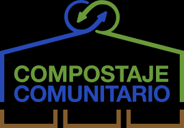
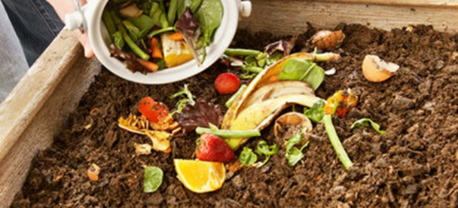
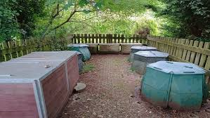

Devolviendo a la tierra lo que es suyo

El compostaje es un proceso biológico mediante el cual microorganismos como bacterias y hongos descomponen materia orgánica —restos de alimentos, hojas, poda o residuos vegetales— en presencia de oxígeno. El resultado es el compost, un material similar a la tierra, rico en nutrientes y muy útil para mejorar la fertilidad del suelo.
Según la información recogida en Wikipedia, el compostaje es una técnica clave en la gestión sostenible de residuos, ya que transforma desechos orgánicos en un recurso valioso para la agricultura, la jardinería y la restauración de suelos degradados.
El compostaje comunitario permite que vecinos y colectivos gestionen sus propios residuos orgánicos de forma local. Este modelo reduce la cantidad de basura que llega a vertederos, disminuye emisiones asociadas al transporte de residuos y fomenta la participación ciudadana.
Entre los beneficios más destacados se encuentran:
No todos los residuos orgánicos son adecuados para el compostaje. Según las guías de compostaje basadas en criterios técnicos y ambientales, estos son los materiales recomendados:
No deben compostarse:

